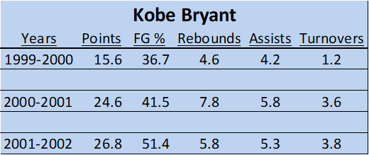
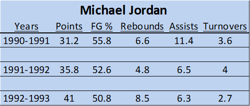
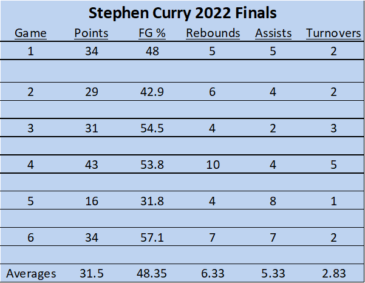

Statistics Selector
The "GOATS" first threepeats numbers
 Stephen Curry 2022 Finals Statistics

When I was younger, my friends would pit two players against one another and debate with stats. They tell no lies, right?! However, we got this vital information from websites that were truly boring and uninspired. They gave you exactly what you wanted, but nothing else. And man it was tough reading through all the lines of stats! They did the job simply, but…here we also give the people what they want. With a direct stat comparison tool, you can pull up Kobe and Jordan’s best playoff runs to compare the greats. Now, we hope to provide a tool for those young and old to live to watch a late-night doubleheader and argue about whom the true G.O.A.T is. A tool that will provide those who want all thing's basketball. No more needing to sift through lines of data while your eyes are being burned on the white state page, we got you.